These examples explore the word counts of published Star Trek novels from 1967 through 2017 based on the stBooks dataset.
First, load packages to assist with data manipulation and plotting.
library(dplyr)
library(lubridate)
library(ggplot2)
library(ggrepel)
library(gridExtra)
library(rtrek) # use >= v0.2.1 for more accurate word count dataLook for trends in word count through time for select series: The Next Generation, Deep Space Nine, and Voyager. Mutating the date and nword columns facilitates a better plot. Retain outliers in general, but drop any titles containing the word “Omnibus” because these are known to be larger books containing multiple individual novels. Inspect the data.
keep_series <- c("TNG", "DS9", "VOY")
x <- mutate(stBooks, date = decimal_date(as.Date(date)), nword = nword / 1000) %>%
filter(series %in% keep_series & !grepl("Omnibus", title))
arrange(x, nword)
#> # A tibble: 266 x 11
#> title author date publisher identifier series subseries nchap nword
#> <chr> <chr> <dbl> <chr> <chr> <chr> <chr> <int> <dbl>
#> 1 Slin~ Terri~ 2008. Simon an~ 1416550240 TNG <NA> 8 10.7
#> 2 Slin~ Keith~ 2008. Simon an~ 978141655~ TNG <NA> 11 18.9
#> 3 Firs~ John ~ 1997. Pocket B~ 978074345~ TNG <NA> 13 23.6
#> 4 Slin~ Willi~ 2008. Simon an~ 1416550224 TNG <NA> 8 23.8
#> 5 Typh~ Chris~ 2012. Gallery ~ 978145165~ TNG Typhon P~ 14 25.3
#> 6 Lust~ Paula~ 2015. Pocket B~ 978147677~ DS9 <NA> 16 25.5
#> 7 Slin~ Rober~ 2008. Simon an~ 978141655~ TNG <NA> 7 25.8
#> 8 Q ar~ Rudy ~ 2015. Pocket B~ 978147677~ TNG <NA> 10 27.2
#> 9 Slin~ J. St~ 2008. Pocket B~ 978141655~ TNG <NA> 12 27.6
#> 10 The ~ James~ 2013. Pocket B~ 978145169~ TNG <NA> 5 29.2
#> # ... with 256 more rows, and 2 more variables: nchar <int>,
#> # dedication <chr>Create a plot, separating each series in a different panel rather than using color to differentiate them.
clrs <- c("cornflowerblue", "orange", "purple")
ggplot(x, aes(date, nword, color = series, fill = series)) +
geom_point(color = "black", shape = 21, size = 3) +
geom_smooth(method = "lm", se = FALSE) +
labs(title = "Star Trek novel word count", subtitle = "By publication date and selected series",
x = "Publication date", y = "Word count (Thousand words)") +
theme_minimal() + scale_color_manual(values = clrs) + scale_fill_manual(values = clrs) +
scale_x_continuous(breaks = seq(1987, 2018, by = 3) + 0.5, labels = seq(1987, 2018, by = 3))
Look at the marginal change through time in average word count (pool all three series) with a simple linear model.
summary(lm(nword ~ date, data = x))
#>
#> Call:
#> lm(formula = nword ~ date, data = x)
#>
#> Residuals:
#> Min 1Q Median 3Q Max
#> -73.630 -13.805 -3.222 10.338 121.988
#>
#> Coefficients:
#> Estimate Std. Error t value Pr(>|t|)
#> (Intercept) -1705.3048 446.1422 -3.822 0.000165 ***
#> date 0.8912 0.2229 3.998 8.3e-05 ***
#> ---
#> Signif. codes: 0 '***' 0.001 '**' 0.01 '*' 0.05 '.' 0.1 ' ' 1
#>
#> Residual standard error: 27.17 on 264 degrees of freedom
#> Multiple R-squared: 0.05709, Adjusted R-squared: 0.05352
#> F-statistic: 15.98 on 1 and 264 DF, p-value: 8.298e-05There is about a 40% increase in average word count per novel across the three series from the the first TNG novel in 1987 through 2017. In the case of the Voyager novels, however, the average word count approximately doubles and does so over a short production run. It is worth noting that as word count has trended upward noticeably, novels from these series have also been published less frequently. If you have read many of these book in paperback form, both the oldest and the more recent ones, this should not be a surprising result. Many of the newer releases have notably more pages and smaller font than the novels from the earlier years.
In this next example, consider all books from all series available in stBooks, with the exception of Omnibus editions and those falling into the reference category. This example looks at cumulative total word count over time for all the selected books. For plot labeling purposes, this time divide the word count by one million.
x <- mutate(stBooks, date = decimal_date(as.Date(date)), nword = nword / 1e6) %>%
filter(series != "REF" & !grepl("Omnibus", title)) %>%
arrange(date) %>%
mutate(total_words = cumsum(nword))
x
#> # A tibble: 732 x 12
#> title author date publisher identifier series subseries nchap nword
#> <chr> <chr> <dbl> <chr> <chr> <chr> <chr> <int> <dbl>
#> 1 Bant~ James~ 1967 Amereon ~ 978084880~ TOS <NA> NA 0.0411
#> 2 Bant~ James~ 1968. Amereon ~ 978084880~ TOS <NA> NA 0.0405
#> 3 Bant~ James~ 1969. Bantam B~ 978055312~ TOS <NA> NA 0.0389
#> 4 Bant~ James~ 1970. Bantam B~ 978055310~ TOS <NA> 9 0.0361
#> 5 Bant~ James~ 1971. Bantam B~ 978055312~ TOS <NA> NA 0.0416
#> 6 Bant~ James~ 1972. Bantam B~ 978055314~ TOS <NA> NA 0.0430
#> 7 Bant~ James~ 1972. Bantam B~ 978055313~ TOS <NA> NA 0.0428
#> 8 Bant~ James~ 1972. Bantam B~ 978055313~ TOS <NA> NA 0.0464
#> 9 Bant~ James~ 1973. Bantam B~ 978055312~ TOS <NA> NA 0.0533
#> 10 Bant~ James~ 1974. Bantam B~ 978055312~ TOS <NA> NA 0.0533
#> # ... with 722 more rows, and 3 more variables: nchar <int>,
#> # dedication <chr>, total_words <dbl>The plot will be labeled with series abbreviations, so a key is needed for clarity. In order to label points on the plot marking the onset of a new novel series, take the first entry in the data frame for each series. A bit of theme customization is required for the table grid object that will display the key as an inset figure.
tab_theme <- gridExtra::ttheme_default(
core = list(fg_params = list(cex = 0.5), padding = unit(c(2, 2), "mm")),
colhead = list(fg_params = list(cex = 0.5)))
series <- group_by(x, series) %>% slice(1) %>% ungroup() %>%
inner_join(stSeries, by = c("series" = "abb")) %>%
select(series, id, date, total_words)
series
#> # A tibble: 20 x 4
#> series id date total_words
#> <chr> <chr> <dbl> <dbl>
#> 1 AV Abramsverse 2009. 41.4
#> 2 CT Tales from the Captain's Table Anthology 1998. 17.4
#> 3 DS9 Deep Space Nine 1993. 8.97
#> 4 DSC Discovery 2018. 52.1
#> 5 ENT Enterprise 2002. 24.5
#> 6 KE Klingon Empire 2004. 30.1
#> 7 MISC Miscellaneous 1995. 11.7
#> 8 NF New Frontier 1997. 15.7
#> 9 SCE Starfleet Corps of Engineers 2001. 22.2
#> 10 SGZ Stargazer 2002. 25.6
#> 11 SKR Seekers 2015. 48.1
#> 12 SNW Strange New Worlds Anthology 1998. 17.5
#> 13 ST All-Series/Crossover 2000. 20.6
#> 14 SV Shatnerverse 1998. 17.2
#> 15 TLE The Lost Era 2004. 28.5
#> 16 TNG The Next Generation 1988. 4.01
#> 17 TOS The Original Series 1967 0.0411
#> 18 TTN Titan 2005. 34.0
#> 19 VAN Vanguard 2006. 34.7
#> 20 VOY Voyager 1996. 13.2
key <- bind_rows(series, tibble(series = "YA-", id = "Young adult books")) %>%
mutate(id = gsub(" Anthology", "", id)) %>%
select(1:2) %>%
setNames(c("Label", "Onset of book series")) %>%
tableGrob(rows = NULL, theme = tab_theme)Finally, create the plot.
brks <- c(1967, seq(1970, 2015, by = 5), 2018)
ggplot(x, aes(date, total_words)) +
geom_step(size = 1, color = "gray30") +
geom_point(data = series, shape = 21, fill = "#FF3030", size = 3) +
geom_label_repel(data = series, aes(label = series), color = "white", fill = "#FF3030CC",
segment.color = "black", fontface = "bold", label.size = NA) +
labs(title = "Star Trek novel cumulative word count",
subtitle = "By publication date, excluding reference and omnibus titles",
x = "Publication date",
y = "Cumulative word count (Million words)") +
theme_minimal() +
scale_x_continuous(expand = c(0, 0), breaks = brks + 0.5, labels = brks) +
scale_y_continuous(expand = c(0, 0)) +
coord_cartesian(xlim = c(1966.5, 2019)) +
annotation_custom(key, xmin = 2007, ymax = 35)
The golden age of licensed Star Trek novel publishing is clear. The 1990s and 2000s saw the creation of many new series as well of regular publication of new novels from existing ones. The current trajectory appears similar to the early 1990s, at least in terms of total words written.